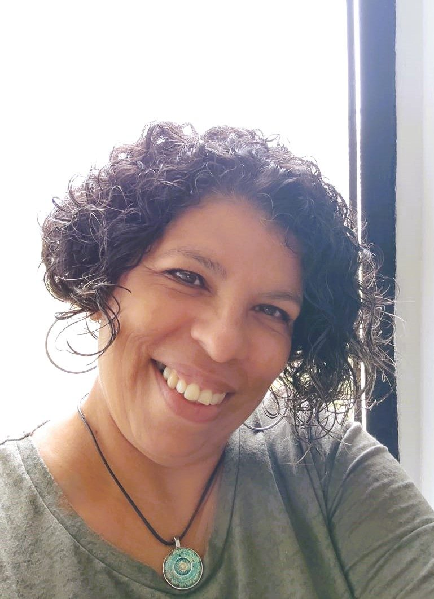

Sobre mí
Hola, soy
Jeanett
Soy terapeuta biointegral. Acompaño procesos personales con bioenergética y herramientas de indagación.

Quien guía, también ha caminado
Llevo años transitando mi propio sendero de autoconocimiento. Comencé este camino hace ya unos largos años, en una búsqueda personal de desarrollo espiritual y sanación. Y en ese andar, descubrí algo que se repite en casi todas las mujeres que acompaño: nos conocemos muy poco.
Nos volvemos expertas en ser hijas, madres, esposas, profesionales... y, sin embargo, cuando alguien nos pregunta ¿quiénes somos en realidad?, nos quedamos sin palabras.
Mi proceso personal me llevó a querer compartir los beneficios que yo misma recibí, y eso me impulsó a formarme con rigor. A lo largo de los años, he integrado diversas disciplinas terapéuticas, desde el Reiki, la Biodescodificación y las Flores de Bach, hasta la Radiestesia Terapéutica, la Técnica de Liberación Emocional y la Terapia de Respuesta Espiritual, para ofrecer un acompañamiento que no solo escucha, sino que integra.
Hoy me presento ante ti como facilitadora de procesos de cambio y transformación. Mi misión es acompañarte a recordar quién eres, desde la energía, el amor y la conciencia. No creo en fórmulas mágicas ni en atajos rápidos; creo en el trabajo genuino, profundo y respetuoso que haces contigo misma.
La Bitácora Atemporal es la destilación de toda esa experiencia: una invitación a hacerte las preguntas que no le harías a cualquiera, para mirar de frente a la mujer grandiosa y radiante que ya eres, aunque hoy te cueste creerlo.
Cuando quieras mirar lo que pesa, aquí tienes un espacio honesto para hacerlo.
Bienvenida a casa y gracias por confiar en mí.
Tres maneras de trabajar contigo
Elige por dónde comenzar
Mirada de acompañante
Escucho tu historia y trabajo contigo, con las herramientas que el momento pida, sin imponerte un camino.
Conocer el acompañamiento →Herramientas propias
Creé la Bitácora Atemporal y el sistema de exploración pendular del curso Tu Energía Habla.
Conocer la Bitácora →Dar forma a las ideas
Acompaño proyectos que necesitan orden, estructura y una dirección concreta.
Conocer la mentoría →Cuando estés lista
Empecemos por una conversación
Treinta minutos, gratuitos y sin compromiso, para conocernos y ver si este acompañamiento es para ti.
Agendar o escribirme →